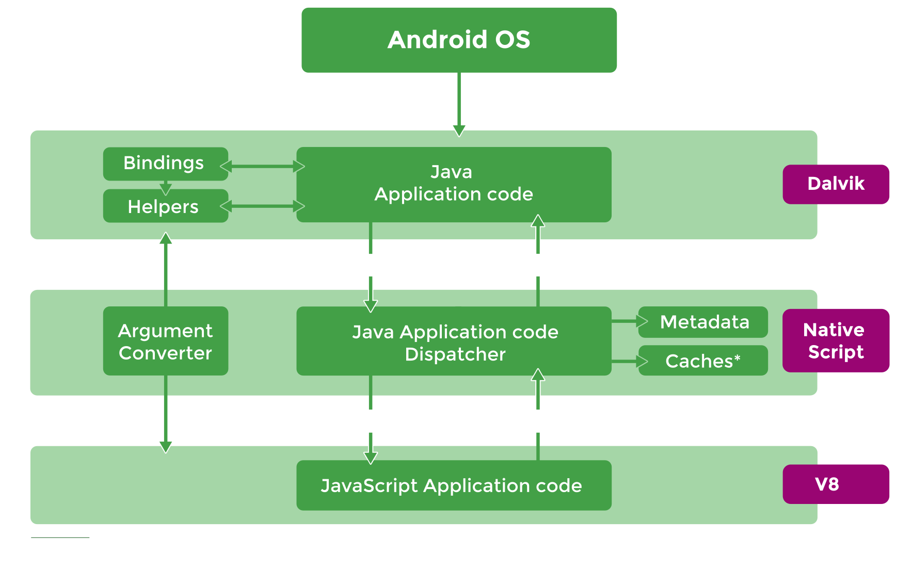
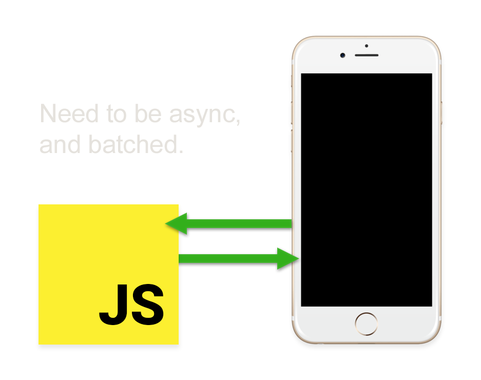

Angular Native
A couple of words about something "new"...
Yuriy Luchaninov / mobidev.biz
...and about real life
What is NativeScript made of?
 +
=
+
=

What is NativeScript?
Idea: write native apps with JS
Or: 100% native performance?
Goal: Access to 100% native functionality
100% native functionality
How does it work?
How does it work?

How does it work?
var file = new java.io.File(path);
- Virtual machine executes JavaScript code.
- Binding defines corresponding native call methods.
- Marshaling is performed between JavaScript string and the java.lang.String object
- The result of the function call is a custom JavaScript object, which serves as a proxy for a native java.io.File object, created on the Android side. When a method is called for this proxy, it is delegated to the underlying native object instance.
What does it look like in the code?
Example from documentation:
// iOS
var array = new NSMutableArray();
array.addObject(new NSObject());
// Android
var context = ...;
var button =
new android.widget.Button(context);
// "My Button" is converted
// to java.lang.String
button.setText("My Button");
What does it look like in the code?
Example from real life:
var listView =
this.page.getViewById("list_view");
listView.on(ListView.itemLoadingEvent,
(args: ItemEventData)=> {
// disable select colors if it iOS
if (args.ios) {
args.ios.selectionStyle =
UITableViewCellSelectionStyle
.UITableViewCellSelectStyleNone;
}
});What's the difference from Angular ?
There is none...
Except:
And the magical postfixes...
- *.android.*
- *.ios.*
- *-common.*
100% native performance
Last update: March.2016
Requires: iOS 8+ device(iPhone 5s)
- Native - Xcode 6.3.2
- NativeScript - NativeScript for iOS 1.6.0
- Xamarin - Xamarin Studio 5.10.2
- Appcelerator - Appcelerator CLI 4.1.0
- Cordova - Apache Cordova 5.1.1
- React Native - 0.19
Launch time
Blank app with a single button.
| Platform | Run 1 | Run 2 | Run 3 |
|---|---|---|---|
| Native | 111ms | 105ms | 108ms |
| React Native | 358ms | 361ms | 353ms |
| Xamarin Forms | 484ms | 471ms | 469ms |
| Cordova | 613ms | 612ms | 609ms |
| NativeScript | 674ms | 672ms | 670ms |
Primitives
Marshaling between JavaScript and native part.
The data is presented for 1 000 000 native code calls.
| Platform | Run 1 | Run 2 | Run 3 |
|---|---|---|---|
| Native | 5ms | 4ms | 4ms |
| Xamarin | 27ms | 27ms | 28ms |
| NativeScript | 989ms | 998ms | 980ms |
| Appcelerator | 34444ms | 33969ms | 35916ms |
| React Native | 130600ms | 125140ms | 127220ms |
| Cordova | 351420ms | 357940ms | 356740ms |
Strings
Marshaling between JavaScript and native part.
The data is presented for 1 000 000 native code calls.
| Platform | Run 1 | Run 2 | Run 3 |
|---|---|---|---|
| Native | 42ms | 42ms | 42ms |
| Xamarin | 248ms | 234ms | 244ms |
| NativeScript | 415ms | 444ms | 418ms |
| Appcelerator | 3215ms | 3198ms | 3180ms |
| React Native | 12358ms | 12464ms | 12547ms |
| Cordova | 36864ms | 36063ms | 35861ms |
Big Data
Marshaling of an array of 65 536 elements between
JavaScript and native part. The data is presented for 200 native code calls.
| Platform | Run 1 | Run 2 | Run 3 |
|---|---|---|---|
| Native | 768ms | 774ms | 759ms |
| NativeScript | 1135ms | 1129ms | 1138ms |
| Xamarin | 3763ms | 3906ms | 3789ms |
| Cordova | 9655ms | 9714ms | 9730ms |
| React Native | 47873ms | 47695ms | 47859ms |
| Appcelerator | 50091ms | 45149ms | 47927ms |
The truth about native performance
All tests LIE!
The strength
in the Threads!
ReactNative
AngularNative

A couple of nice things
Code sharing
Code sharing
Code sharing

https://github.com/NathanWalker/angular-seed-advanced
ES6
Generally speaking, NativeScript uses the latest stable releases of V8
and JavaScriptCore. That is why support for the ECMAScript language in
NativeScript for iOS is similar to support for desktop Safari, and support
in NativeScript for Android is similar to support is similar to support
for desktop Chrome.
Upgrading hybrid apps to natives with NativeScript

And a lot of other things....
- Extension of existing native apps
- Work with Android widgets
- Tests with Mocha.js, Appium, etc.
- Universal Windows Platform
- Telerik App Builder
- WebInspector & NodeInspector for debugging
- Default Themes
- v.3
But in real life...
Just the first week of a project
QA: Feedback
- - Almost every animation malfunctions if you manage to tap "back" on an Android device during an animation.
- + A list of 3000 objects scrolls nicely! ;-)
Developers: Difficulties
- CLI: emulator doesn't always launch on the first try.
- When creating a component structure from standard layout templates, the emulator sometimes crashes, or just a blank screen is shown. It is very hard to define the cause of this behavior.
Developers: Difficulties
- There is no stable inspector for livesync, no opportunity to see the layout.
- There is no opportunity to use standard html elements of layouting. Stylization of ready templates becomes more difficult because it's impossible to check their basic CSS options. Therefore, sometimes some of the options cannot be modified.
Developers: What they liked
- CLI.
- Off-the-shelf animations.
- Off-the-shelf layout elements, which are rendered differently, depending on the platform (e.g. the same code for all platforms).
Developers: What they liked
- Convenient layout containers. You can quickly make up a simple design.
- It is possible to develop for two platforms at the same time – division and automated selection of files (templates, CSS) .android and .ios, depending on the build.
- Angular + RxJS as a flexible means to asynchronous operations.
Developers: What they disliked
- Less convenient than Web development.
- Difficult stylization, if a custom design is used.
- Errors, if several layout templates mismatch.
- For quick and effective development it is necessary to know the specifics of Angular and the native platform.
An outside opinion:
- Why are the demos so bad?
- Splashscreen?
Real case: before
Real case: after
Conclusions:
- Product Ready
- Keep in mind - you need to study the specifics of platforms!
- Asynchrony does not equal threads, use Web Workers
- Keep an eye on official issues!
Several useful links
- http://www.nativescript.org/
- http://docs.nativescript.org/angular/start/introduction.html
- http://www.hybridtonative.com/
- http://nativescript.github.io/developer-day-workshop/
- http://www.nativescript.org/ctos-guide
- http://developer.telerik.com/featured/nativescript-a-technical-overview/
- http://developer.telerik.com/featured/nativescript-works/
- http://developer.telerik.com/featured/nativescript-android/
- http://github.com/NativeScript/sample-iOS-Profiling/tree/performance-tests
- http://developer.telerik.com/featured/benefits-single-threading-model-nativescript/
- http://www.quora.com/What-are-the-key-difference-between-ReactNative-and-NativeScript/answer/Valentin-Stoychev
- http://github.com/NativeScript/NativeScript/issues/1563
- http://medium.com/@enchev/extend-your-existing-android-app-with-angular-2-and-nativescript-56a4e1c72d6
- http://github.com/NativeScript/docs/blob/master/publishing/creating-launch-screens-android.md